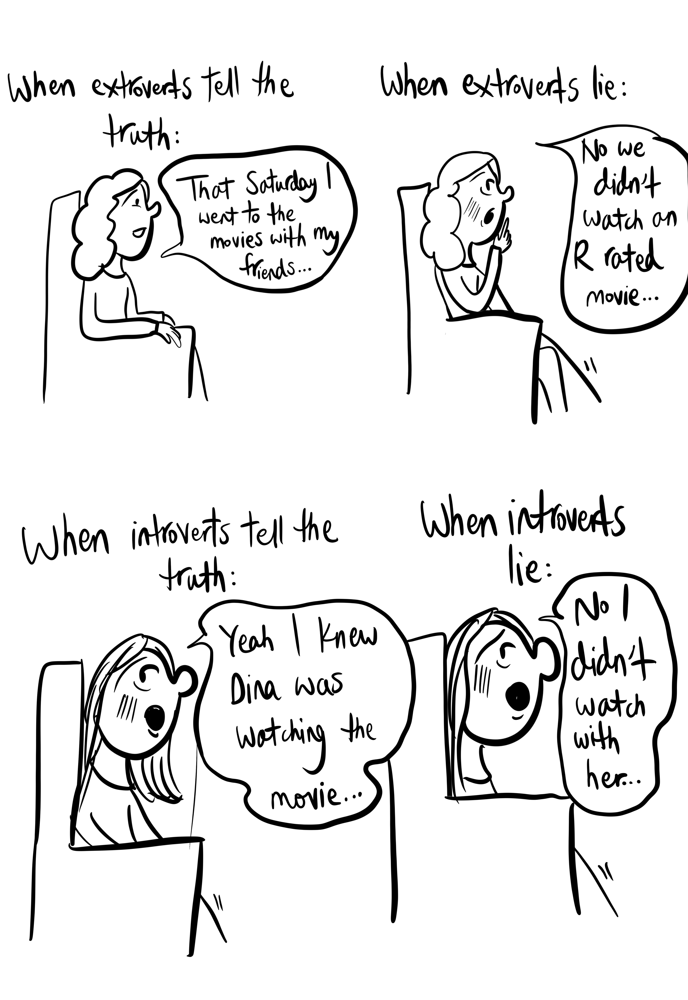
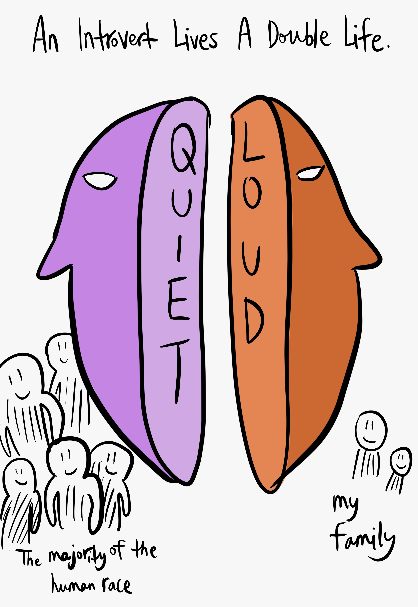
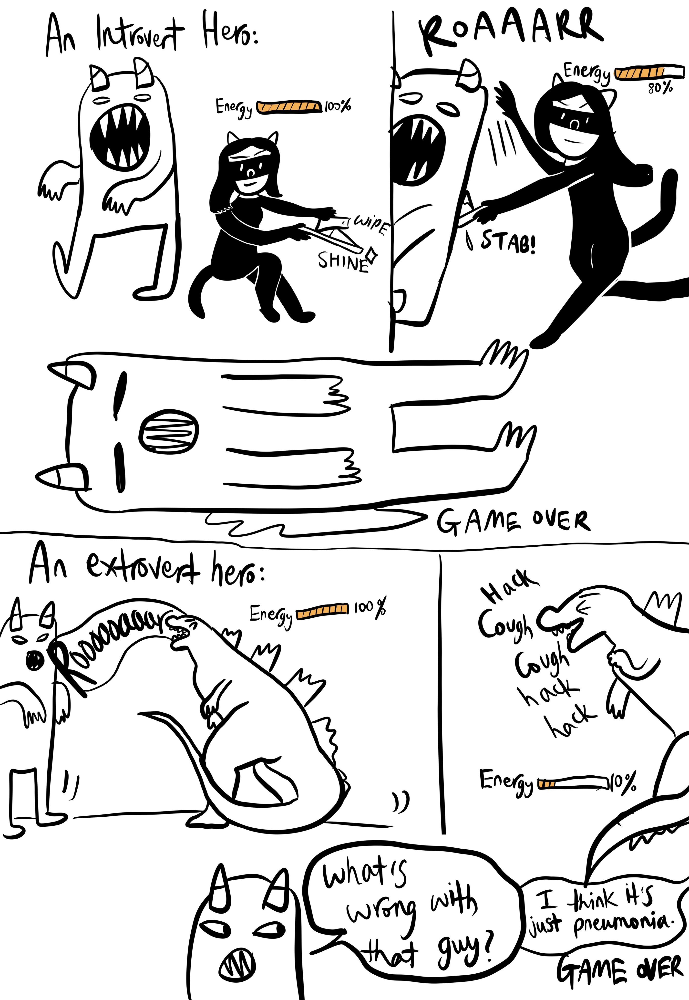

Being An Introvert
As an introvert, I've often found myself in situations that are uniquely challenging for those of us who prefer quieter, more introspective experiences. I created this comic strip collection to share some of these moments.

The introvert's dilemma: brilliant on paper, tongue-tied in person, while the world misses out on our hidden superpowers

The ironic dilemma: extroverts are easy to read when lying, while introverts look so nervous even when telling the truth that no one can tell the difference

The internal monologue that happens when someone asks "Why are you so quiet?" at a social gathering

My idea of a perfect weekend: a good book, a warm drink, and blissful solitude to recharge

The introvert quietly solving problems with elegance, while the spotlight shines elsewhere—our brilliance whispers, never shouts
Being an introvert isn't about being shy or antisocial—it's about how we process the world around us and where we draw our energy from. While extroverts gain energy from social interactions, we introverts need quiet time to recharge.
I hope these comics bring a smile to fellow introverts who recognize themselves in these situations, and perhaps help extroverts understand us a little better!
Back to Blog